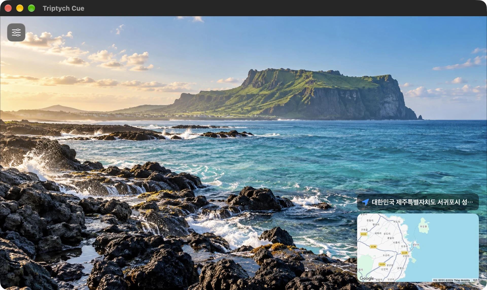
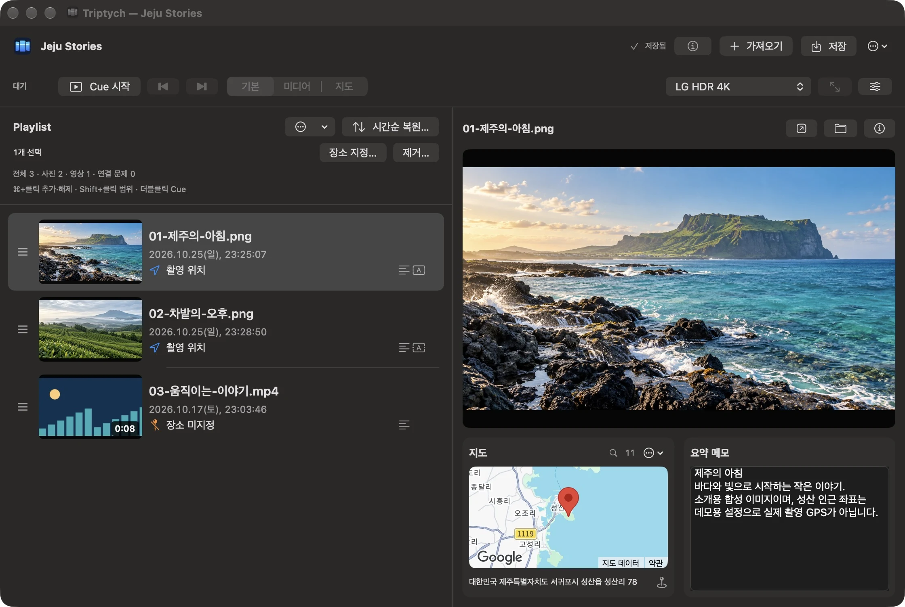
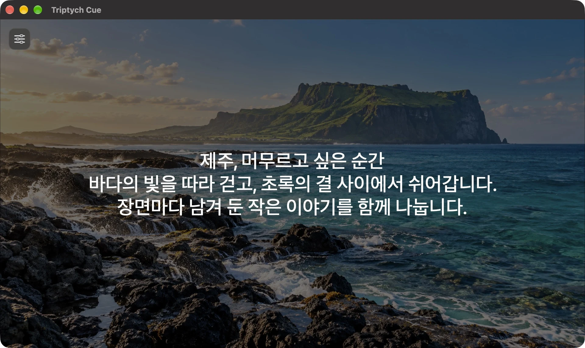
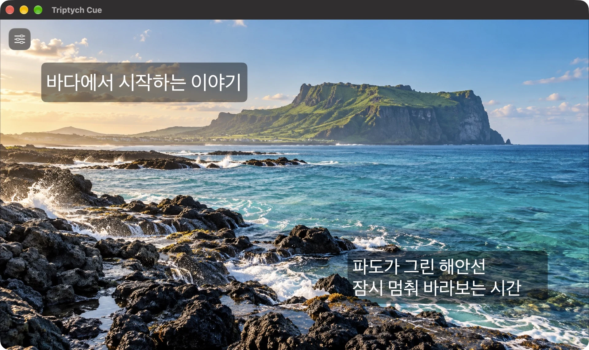
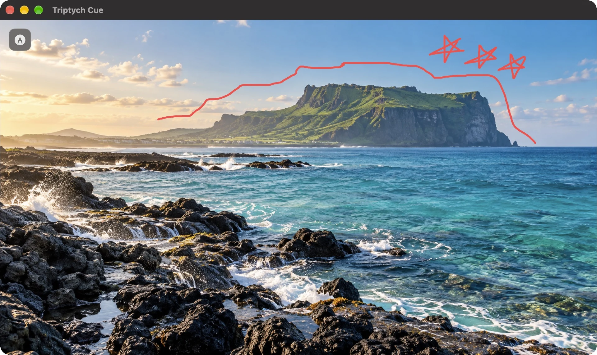

A NATIVE MAC EXPERIENCEmacOS 26+ / v1.1.1

01 / CUE장면과 장소가 만나는 화면

ROLLING → CUE준비하는 화면에서, 보여주는 화면으로.
YOUR MOMENTS, IN CONTEXT.
THE IDEA
한 장을 보는 일에서,
그곳을 함께 기억하는 일로.
사진만으로는 다 전하지 못한 이야기가 있습니다.
어디였는지, 어떤 순서였는지, 무엇을 보았는지.
Triptych는 장면 곁에 그 맥락을 놓습니다.
01 — THREE WAYS TO SEE
같은 순간.
세 가지 시선.
장면과 장소를 함께, 사진을 더 크게,
혹은 지도를 중심으로.
이야기에 맞춰 화면을 바꿔보세요.
장면 곁에, 장소.
사진과 영상을 중심에 두고 작은 지도로 위치를 함께 전합니다.
STANDARD / 01기억을, 지도 위에.
가까운 사진은 군집으로 모아 보고, 확대하며 개별 위치를 살펴봅니다.
MAP / 03
실제 앱 화면입니다. 여행 사진은 AI 생성 데모이며, 지도 위치는 기능 설명을 위한 예시입니다.
02 — MORE THAN A SLIDESHOW
보여줄 장면에,
전하고 싶은 맥락을.
01 / PLACE“여기가 어디냐면.”
지도에서 시작되는 대화.
사진의 위치와 직접 지정한 장소를 지도에 연결하세요. 여러 장소에 놓인 사진과 영상을 따라 여행의 흐름을 함께 살펴볼 수 있습니다.
가까이 모인 사진은 군집으로 묶어 보여줍니다. 확대하며 개별 위치를 살펴보고, 같은 위치에 겹친 사진은 군집 목록에서 확인하세요.
지도는 Google Maps를 사용하며 인터넷 연결이 필요합니다.
A SENSE OF PLACE사진 너머의 풍경까지.

SUMMARY / THE MAIN THOUGHT장면의 중심에 놓는 한마디.
02 / SUMMARY요약 메모.
꼭 전하고 싶은 한마디.
장면에 담긴 생각을 화면 중앙에 띄워보세요. 사진 위를 차분하게 어둡히고 글에 시선을 모아, 이야기의 핵심을 전합니다.
M · 요약 메모 표시

ANNOTATIONS / THE DETAILS설명이 필요한 곳에, 필요한 말.
03 / ANNOTATIONS설명 박스.
장면 곁에 더하는 맥락.
이름이나 짧은 설명을 박스에 담아 원하는 곳에 놓으세요. 위치와 크기를 조절하며 사진 속 세부 내용을 장면과 함께 보여줄 수 있습니다.
B · 설명 박스 표시

DRAWING / A POINT OF FOCUS말의 흐름을 따라, 선 하나.
04 / DRAWING화면 그리기.
지금 보는 곳을 함께.
말로만 설명하기 어려운 부분은 화면 위에 직접 그리며 짚어주세요. 이야기를 이어가는 순간에, 함께 볼 지점을 또렷하게 전합니다.
D · 화면 그리기
03 — PREPARE. PRESENT.
준비는 차분하게.
이야기는 자연스럽게.
편집하는 Rolling과 보여주는 Cue.
서로 다른 두 화면이
하나의 발표를 만듭니다.
- 01
장면을 모으고
사진과 영상을 하나의 목록에 담아 보여줄 순서를 정합니다.
- 02
이야기를 준비하고
Rolling에서 장면을 미리 보고 장소와 메모를 다듬습니다.
- 03
Cue로 보여주세요
준비한 장면을 열고, 이야기의 흐름에 맞춰 화면을 전환합니다.
04 — STAY IN THE FLOW
손끝에서 이어지는
이야기의 리듬.
화면보다 이야기에 집중하도록.
자주 쓰는 Cue 동작은 키보드 가까이에.
- 이전 · 다음 장면
- ←→
- 기본 · 미디어 · 지도
- 123
- 영상 재생 · 일시정지
- Space
- 요약 메모 표시
- M
- 설명 박스 표시
- B
- 화면 그리기
- D
MADE FOR YOUR POINT OF VIEW
다음 이야기는,
당신의 장면으로.
화면 다시 둘러보기 ↗Mac을 위한 개인 프로젝트. 지금은 배포를 준비하고 있습니다.